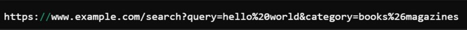

Example
• In this URL:

• The search query for "hello world" includes a space between "hello" and "world",
which is encoded as %20.
• The category "books&magazines" includes an ampersand, which is encoded as %26.
What is URL Encoding?
Definition:
• URL encoding converts characters into a format that can be transmitted over the Internet.
URLs can only be sent over the Internet using the ASCII character set.
• Since URLs often contain characters outside the ASCII set,
URL encoding replaces unsafe ASCII characters with a "%" followed by two
hexadecimal digits that represent the ASCII code of the character.
Why Use URL Encoding?
• Safety: URL encoding replaces unsafe characters that might be confusing to
web servers and browsers, such as spaces or punctuation.
• Compatibility: Ensures that URLs, which often include characters outside the
ASCII set, are compatible across different browsers and servers.
How Does URL Encoding Work?
• Characters that have special meanings in URLs (like ?, &, =, #, etc.)
or non-alphanumeric characters are replaced by a % followed by
two hexadecimal values that correspond to their ISO8859-1 (or Latin-1) codes.
• For example, a space character ( ) is replaced by %20.
Common URL Encoded Values
• Space ( ) is encoded as %20
• Double Quote (") is encoded as %22
• Plus Sign (+) is encoded as %2B
• Forward Slash (/) is encoded as %2F
• Question Mark (?) is encoded as %3F
• Ampersand (&) is encoded as %26
• Equals Sign (=) is encoded as %3D
Best Practices
• Always Encode Query Strings: Any data that forms part of a URL's query string should
be URL encoded to prevent misinterpretation of URL parameters by servers and applications.
• Use Built-in Functions for Encoding:
Most programming languages provide functions for URL encoding.
• For example, in JavaScript, you can use
encodeURIComponent() to encode a URL component.